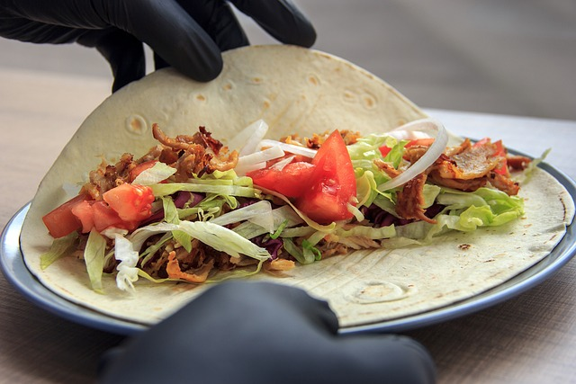

Yufka / Dürüm
| 250 | gr Mehl oder Maismehl (Maismehl für Mexikanisch Weizenmehl für Yufka/Dürüm) |
| 250 | ml Wasser |
| 0.5 | TL Salz |
Zubereitung
Alle Zutaten zu einem Teig vermengen
Den Teig in 4-6 gleich große Stücke teilen
Die Teigkugeln auf einer bemehlten Fläche ausrollen und in einer Pfanne ohne Öl herausbraten.
Danach die Teiglinge nach Wunsch belegen und genießen